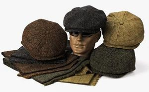

Today cowboy hats worn by many people, and is particularly associated with ranch workers in the western, midwestern, and southern United States, western Canada and northern Mexico, and with many country music, regional Mexican and Sertanejo music performers, and with participants in the North American rodeo circuit.
The bucket hat is a hat with a narrow, downward-sloping brim. It was first adopted as a high fashion item in the 1960s, and with subsequent revivals in both street fashion and on the catwalk. It is popular festival gear in the present day, also known as a "session hat".
The Asian conical hat is kept on the head by a cloth or fiber chin strap, an inner headband, or both. It is a simple style of conically shaped sun hat notable in modern-day nations and regions in South, East, Southeast Asia, and has many names, a few including kasa, jaapi, and ngop.
The Ushanka is a Russian fur hat with ear-covering flaps that can be tied up on the crown of the cap, or fastened at the chin to protect the ears, jaw, and lower chin from the cold. The dense fur also offers some protection against blunt impacts to the head. They are also traditionally worn in the Baltic region including Sweden, Finland, Norway and the whole eastern European region.
A fedora is a hat with a soft brim and indented crown, and is typically creased lengthwise down the crown and "pinched" near the front on both sides. The term fedora was in use as early as 1891. Its popularity soared, and eventually it eclipsed the similar-looking homburg.

Also called an eight point cap, gatsby, jeff hat, or baker boy hat. Its shape round, made of eight pieces, fuller, and paneled with a button on top. It was popular in Europe and North America in the early 20th century among both boys and adult men. It was predominately worn by working-class boys, especially newspaper boys.